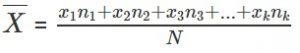

Chương1: Số hữu tỉ, số thực
Bài 1: Tập hợp Q các số hữu tỉ
1. Khái niệm số hữu tỉ
Số hữu tỉ là số có thể viết dưới dạng a / b với a,b ∈ Z, b # 0 và được kí hiệu là Q.
2. Biểu diễn số hữu tỉ trên trục số
Mỗi số hữu tỉ được biểu diễn bởi một điểm trên trục số và không phụ thuộc vào cách chọn phân số xác định nó.
3. So sánh khố hữu tỉ
Để so sánh hai số hữu tỉ x, y ta làm như sau:
- Viết x,y dưới dạng phân số cùng mẫu dương x = a / m , y = b / m (m>0)
- So sánh các tử là số nguyên a và b
Nếu a > b thì x > y
Nếu a = b thì x = y
Nếu a < b thì x < y
Chú ý
- Số hữu tỉ lớn hơn 0 gọi là số hữu tỉ dương
- Số hữu tỉ nhỏ hơn 0 gọi là số hữu tỉ âm
- Số 0 không là số hữu tỉ dương, cũng không là số hữu tỉ âm
Bài 2: Cộng, trừ số hữu tỉ
1. Cộng trừ số hữu tỉ
Viết hai số hữu tỉ x,y dưới dạng:
x =
a
/
m
, y =
b
/
m
Khi đó:
x + y =
a
/
m
+
b
/
m
=
a + b
/
m
x - y = x + (-y) =
a
/
m
+ (-
b
/
m
) =
a - b
/
m
2. Quy tắc "chuyển vế"
Khi chuyển một số hạng từ vế này sang vế kia của một đẳng thức ta phải đổi dấu số hạng đó
Tổng quát: với mọi x, y , z ∈ Q, ta có:
x + y + z => x = z - y
Bài 3: Nhân, chia số hữu tỉ
Với 2 số hữu tỉ x = a / b , y = c / d cho trước, ta có lý thuyết, công thức nhân hai số hữu tỉ như sau:
1. Nhân hai số hữu tỉ
x . y = a / b . c / d = a.c / b.d
2. Chia hai số hữu tỉ
x : y = a / b : c / d = a.d / b.c
3. Chú ý khi nhân, chia hai số hữu tỉ
- Phép nhân trong Q có các tính chất cơ bản: giao hoán, kết hợp, nhân với 1, tính chất phân phối của phép nhân đối với phép cộng.
- Thương của phép chia x cho y (với y # 0) gọi là tỉ số của x và y, kí hiệu: x : y
Bài 4: Giá trị tuyệt đối của một số hữu tỉ
Giá trị tuyệt đối của một số hữu tỉ x được kí hiệu là |x| và được xác định bằng công thức dưới đây:
|x| = x nếu x ≥ 0
|x| = -x nếu x ≤ 0
Bài 5: Cộng, trừ, nhân, chia số thập phân
Để cộng, trừ, nhân, chia các số thập phân ta viết chúng dưới dạng phân số thập phân rồi làm theo quy tắc các phép tính đã biết về phân số
Diễn giải:- Khi cộng, trừ số thập phân ta tiến hành cộng hoặc trừ các phần tương ứng của các số đó
Tính 0,25 + 2,5 ta làm như sau: 5 + 0 = 5 , 2 + 5 = 7 , 0 + 2 = 2 . Vậy 0,25 + 2,5 = 2,75
Tính 8,6 – 2,7 ta làm như sau: 6 – 7 không trừ được ta lấy 16 – 7 = 9, tiếp tục 8 – 2 trừ thêm 1 nữa tức là 8 -3 = 5. Vậy 8,6 – 2,7 = 5,9
-Với phép nhân, chia các số thập phân ta cần viết chúng dưới dạng phân số.
Tính 3,1 x 2,5 ta làm như sau:
3,1 x 2,5 = x = x =
Làm tương tự với phép chia số thập phân
Bài 6: Định nghĩa, tính chất của tỉ lệ thức
1. Định nghĩa
Tỉ lệ thức là một đẳng thức của hai số = ( a, d: ngoại trung tỉ)
2. Tính chất
a. Tính chất cơ bản: Nếu = thì a.d = b.c
b. Điều kiện để bốn số thành lập tỉ lệ thức:
Nếu a.d = b.c và a,b,c,d ≠ 0 thì ta có các tỉ lệ thức:
= ; = ; = ; =
Bài 7: Tính chất của dãy tỉ số bằng nhau
1.Tính chất
Từ dãy tỉ số bằng nhau = = ta suy ra:
= = = =
2. Số tỉ lệ
Khi nói các số a, b, c tỉ lệ với các số 3, 4, 5 tức là ta có: = =
Bài 8: Số thập phân hữu hạn, vô hạn tuần hoàn
1. Số thập phân hữu hạn
Nếu một phân số tối giản với mẫu dương và mẫu không có ước nguyên tố khác 2 và 5 thì phân số đó viết được dưới dạng số thập phân hữu hạn.
2. Số thập phân vô hạn tuần hoàn
Nếu một phân số tối giản với mẫu dương và mẫu có ước nguyên tố khác 2 và 5 thì phân số đó viết dưới dạng số thập phân vô hạn tuần hoàn
*Chú ý- Mỗi số hữu tỉ được biểu diễn bởi một số thập phân hữu hạn hoặc vô hạn tuần hoàn.
- Ngược lại, mỗi số thập phân hữu hạn hoặc vô hạn tuần hoàn biểu diễn một số hữu tỉ.
Bài 9: Quy ước làm tròn số
1. Số bỏ đi nhỏ hơn 5
Nếu chữ số đầu tiên bỏ đi nhỏ hơn 5 thì ta giữ nguyên bộ phận còn lại.
Ví dụ: Làm tròn số 0,36451 đến chữ số thập phân thứ hai ta được kết quả là 0,36
2. Số bỏ đi lớn hơn 5
Nếu chữ số đầu tiên bỏ đi lớn hơn hoặc bằng 5 thì ta cộng thêm 1 vào chữ số cuối cùng của bộ phận còn lại.
Ví dụ:
Làm tròn số 0,36451 đến chữ số thập phân thứ nhất ta được kết quả là 0,4.
Bài 10: Khái niệm số vô tỉ, căn bậc 2
1. SỐ vô tỉ
Số vô tỉ là số viết được dưới dạng thập phân vô hạn không tuần hoàn
Tập hợp các số vô tỉ được kí hiệu là I
2. Khái niệm về căn bậc 2
a. Định nghĩa: Căn bậc hai của một số a không âm là số x sao cho x2 = a
b. Tính chất: Với hâi số dương bất kì a và b
- Nếu a = b thì √a = √b
- Nếu a < b thì √a < √b
Khái niệm số thực, trục số thực
1. Khái niệm số thực
Số hữu tỉ và số vô tỉ được gọi chung là số thực.
Tập hợp các số thực được kí hiệu là R: R = Q ∪ I
2. Trục số thực
- Mỗi số thực được biểu diễn bởi một điểm trên trục số.
- Ngược lại mỗi điểm trên trục số đều biểu diễn một số thực.
Chỉ có tập hợp số thực mới lấp đầy trục số.
Chú ý: Các phép toán trong tập hợp các số thực cũng có các tính chất tương tự như các phép toán trong tập hợp số hữu tỉ.
Ta có Z ⊂ Q ⊂ R.
Chương 2: Hàm số và đồ thị
Bài 12: Công thức, tính chất của đại lượng tỉ lệ thuận
1. Công thức
Hai đại lượng tỷ lệ thuận x và y liên hệ với nhau bởi công thức y = kx, với k là một hằng số khác ), (y tỉ lệ thuận với x theo hệ số tỉ lệ k).
2. Tính chất
– Tỉ số hai giá trị tương ứng của hai đại lượng tỉ lệ thuận luôn không đổi và bằng hệ số tỉ lệ:
= = = k
– Tỉ số hai giá trị bất kì của đại lượng này bằng tỉ số hai giá trị tương ứng của địa lượng kia.
= ; =
Bài 13: Một số bài toán về đại lượng tỉ lệ thuận
Bài tập: Hai đại lượng x và y tỉ lệ thuận với nhau hay không, nếu:
a)
| x | 1 | 2 | 3 | 4 | 5 |
| y | 9 | 18 | 27 | 36 | 45 |
b)
| x | 1 | 2 | 5 | 6 | 9 |
| y | 12 | 24 | 60 | 72 | 90 |
a) Ta có:
\(\displaystyle\frac{x}{y}=\frac{1}{9}=\frac{2}{18}=\frac{3}{27}=\frac{4}{36}=\frac{5}{45}\)
Vậy x và y là hai đại lượng tỉ lệ thuận
b) Ta có \(\displaystyle \frac{6}{72}\ne \frac{9}{90}\)
Vậy x và y là hai đại lượng không tỉ lệ thuận.
Bài 14: Công thức, tính chất của đại lượng tỉ lệ nghịch
1. Công thức
Hai đại lượng tỉ lệ nghịch x và y liên hệ với nhau bởi công thức \(\displaystyle y=\frac{a}{x}\) , với a là một số khác 0. Ta nói y tỉ lệ nghịch với x theo hệ số tỉ lệ a
2. Tính chất
- Tích của một giá trị bất kì của đại lượng này với giá trị tương ứng của đại lượng kia tương ứng của đại lượng kia luôn là một hằng số (bằng hệ số tỉ lệ).
x1y1 = x2y2 = x3y3 = ... = a
– Tỉ số hai giá trị bất kì của đại lượng này bằng nghịch đảo của tỉ số hai giá trị tương ứng của đại lượng kia.
\(\displaystyle \frac{{{x}_{1}}}{{{x}_{2}}}=\frac{{{y}_{1}}}{{{y}_{2}}}\) ; \(\displaystyle \frac{{{x}_{1}}}{{{x}_{3}}}=\frac{{{y}_{1}}}{{{y}_{3}}}\) ...
Bài 15: Một số bài toán về đại lượng tỉ lệ nghịch
1)
| x | 1 | 2 | 4 | 5 | 8 |
| y | 120 | 60 | 30 | 24 | 15 |
2)
| x | 1 | 3 | 4 | 5 | 6 |
| y | 30 | 20 | 15 | 12,5 | 10 |
x . y = 1 . 120 = 2 . 60 = 4 . 30 = 5 . 24 = 8 . 15 = 120
Theo tính chất của đại lượng tỉ lệ nghịch thì x và y trong trường hợp này là hai đại lượng tỉ lệ nghịch.
2) Ta có:
x . y = 1 . 30 ≠ 3 . 20
⇒ x và y trong trường hợp này không là hai đại lượng tỉ lệ nghịch.
Bài 17: Khái niệm hàm số
1. Khái niệm
Nếu đại lượng y phụ thuộc vào đại lượng thay đổi x sao cho với mỗi giá trị của x ta luôn xác định chỉ một giá trị tương ứng của y thì y được gọi là hàm số của x và gọi x là biến số.
2. Chú ý
– Hàm số có thể được cho bằng bảng, bằng lưới, bằng công thức…. Khi hàm số được cho bằng công thức thì ta hiểu rằng biến số x chỉ nhận những giá trị làm cho công thức có nghĩa.
– Hàm số thường được kí hiệu y = f(x)./p>
Bài 17: Mặt phẳng toạ độ, trục tung, trục hoành
1. Mặt phẳng toạ độ
Trên mặt phẳng, nếu hai trục Ox, Oy vuông góc và cắt nhau tại gốc O của mỗi trục số, thì ta gọi hệ trục toạ độ Oxy.
Ox và Oy gọi là các trục toạ độ
– Trục nằm ngang Ox gọi là trục hoành.
– Trục thẳng đứng Oy gọi là trục tung
Giao điểm O gọi là gốc toạ độ. Mặt phẳng có hệ trục toạ độ Oxy gọi là mặt phẳng toạ độ Oxy.
2. Toạ độ của một điểm trong mặt phẳng toạ độ
– Trên mặt phẳng toạ độ, mỗi điểm M xác định một cặp số (x0; y0). Ngược lại mỗi cặp số (x0; y0) xác định vị trí của một điểm M.
– Cặp số (x0; y0) gọi là toạ độ của điểm M; x0 là hoành độ và y0 là tung độ của điểm M
Bài 18: Khái niệm đồ thị hàm số y= ax (a≠0)
1. Đồ thị hàm số
Đồ thị hàm số y = f(x) là tập hợp tất cả các điểm biểu diễn các cặp giá trị tương ứng (x; y) trên mặt phẳng toạ độ.
2. Đồ thị của hàm số y = ax (a ≠ 0)
Đồ thị hàm số y = ax (a ≠ 0) là đường thẳng đi qua gốc toạ độ.
Chương 3: Thống kê
Bài 19: Thu thập số liệu thống kê, tần số
1. Thu thập số liệu thống kê
Các số liệu thu thập được khi điều tra về một dấu hiệu gọi là số lệu thống kê. Mỗi số liệu là một giá trị của dấu hiệu.
– Số tất cả các giá trị của dấu hiệu bằng số các đơn vị điều tra.
2. Tần số của một giá trị
Số lần xuất hiện của một giá trị trong dãy các giá trị của dấu hiệu gọi là tần số của giá trị đó.
3. Bảng số liệu thống kê ban đầu
Các số liệu thu thập được khi điều tra được ghi trên bảng thống kê và được gọi là bảng số liệu thống kê ban đầu.
Bài 20: Bảng tần số và công dụng
1. Bảng tần số
Bảng tần số còn được gọi là bảng phân phối thực nghiệm của dấu hiệu.
Ta có thể lập bảng “tần số” theo dòng hoặc theo cột.
| Giá trị (x) | x1 | x2 | x3 | … | xn | |
| Tần số (n) | n1 | n2 | n3 | … | nn | N = |
| Giá trị (x) | Tần số (n) |
| x1 x2 x3 … xn | n1 n2 n3 … nn |
| N = |
2. Công dụng của bảng tần số
2. Công dụng của bảng tần số
Bài 21: Khái niệm biểu đồ, tần suất
1. Khái niệm biểu đồ
Ngoài bảng số liệu thống kê ban đầu, bảng tần số, người ta còn dùng biểu đồ cho một hình ảnh cụ thể về giá trị của dấu hiệu về tần số.
Các loại biểu đồ thường gặp là: biểu đồ đoạn thẳng, biểu đồ hình chữ nhật, biểu đồ hình quạt.
2. Khái niệm tần suất
Tỉ số giữa tần số n của giá trị xi với tần số N các phần tử điều tra được gọi là tần suất f của giá trị đó.
– Tần suất của một giá trị được tính theo công thức: \(\displaystyle f=\frac{n}{N}\)
N là số tất cả các giá trị
n là tần số của một giá trị
f là tần suất của giá trị đó
Bài 22: Khái niệm, quy tắc tìm số trung bình cộng
1. Khái niệm số trung bình cộng
Số trung bình cộng của một dấu hiệu X, kí hiệu X¯ là số dùng làm đại diện cho một dấu hiệu khi phân tích hoặc so sánh nó với các biến lượng cùng loại.
2. Quy tắc tìm số trung bình cộng
Số trung bình cộng của một dấu hiệu được tính từ bảng tần số theo cách sau:
– Nhân từng giá trị với tần số tương ứng
– Cộng tất cả các tích vừa tìm được
– Chia tổng đó cho các giá trị (tức tổng các tần số)
Ta có công thức:
Trong đó:
x1, x2, ...,xk là k giá trị khác nhau của dấu hiệu x.
n1, n2, ..., nk là tần số tương ứng
N là số các giá trị
\(\displaystyle \overline{X}\) là số trung bình của dấu hiệu X.
3. Ý nghĩa của trung bình cộng
Số trung bình cộng thường được dùng làm “đại diện” cho dấu hiệu, đặc biệt là khi muốn so sánh các dấu hiệu cùng loại.
4. Mốt của dấu hiệu
Mốt của dấu hiệu là giá trị có tần số lớn nhất trong bảng tần số. Kí hiệu là M0.
Chương 4: Biểu thức đại số
Bài 23: Khái niệm biểu thức đại số, biểu thức nguyên, biết thức phân
1. Khái niệm biểu thức đại số
Những biểu thức bao gồm các phép toán cộng, trừ, nhân, chia, nâng lên lũy thừa không chỉ trên những số mà còn có thể trên những chữ được gọi là biểu thức đại số.
Ví dụ: 3x + 5 ; ax2 + bx + c ; \(\displaystyle \frac{1}{3x-2}\)
Biểu thức đại số bao gồm: biểu thức nguyên, biểu thức phân.
2. Khái niệm biểu thức nguyên
Biểu thức đại số không chứa biến ở mẫu gọi là biểu thức nguyên.
Ví dụ: 3x + 5 ; ax2 + bx + c ; 3a ; ax + b
3. Khái niệm biểu thức phân
Biểu thức đại số có chứa biến ở mẫu gọi là biểu thức phân
Ví dụ: \(\displaystyle \frac{1}{3x};\frac{5}{2x+1};\frac{1}{4x_{{}}^{2}}\)
Bài 24: Giá trị của một biểu thức đại số
1. Giá trị của một biểu thức đại số
Để tính giá trị của một biểu thức đại số tại những giá trị cho trước của các biến, ta thay các giá trị cho trước đó vào biểu thức rồi thực hiện các phép tính.
2. Lưu ý
– Đối với biểu thức nguyên, ta luôn tính được giá trị của nó tại mọi giá trị của biến.
– Đối với biểu thức phân ta chỉ tính được giá trị của nó tại những giá trị của biến làm cho mẫu khác không.
Bài 25: Các khái niệm về đơn thức
1. Khái niệm đơn thức
Đơn thức là biểu thức đại số chỉ gồm một số, hoặc một biến, hoặc một tích giữa các số và các biến.
Ví dụ: 3, xy, 3x2
2. Đơn thức thu gọn
Đơn thức thu gọn là đơn thức chỉ gồm một tích của một số với các biến, mà mỗi biến đã được nâng lên lũy thừa với số mũ nguyên dương (mỗi biến chỉ được viết một lần). Số nói trên gọi là hệ số (viết phía trước đơn thức) phần còn lại gọi là phần biến của đơn thức (viết phía sau hệ số, các biến thường viết theo thứ tự của bảng chữ cái).
Các bước thu gọn một đơn thức:Bước 1: Xác định dấu duy nhất thay thế cho các dấu có trong đơn thức. Dấu duy nhất là dấu “+” nếu đơn thức không chứa dấu “-” nào hay chứa một số chẵn lần dấu “-“. Dấu duy nhất là dấu “-” trong trường hợp ngược lại.
Bước 2: Nhóm các thừa số là số hay là các hằng số và nhân chúng với nhau.
Bước 3: Nhóm các biến, xếp chúng theo thứ tự các chữ cái và dùng kí hiệu lũy thừa để viết tích các chữ cái giống nhau.
3. Bậc của đơn thức thu gọn
Bậc của đơn thức có hệ số khác không là tổng số mũ của tất cả các biến có trong đơn thức đó. Số thực khác 0 là đơn thức bậc không. Số 0 được coi là đơn thức không có bậc.
4. Nhân đơn thức
Để nhân hai đơn thức, ta nhân các hệ số với nhau và nhân các phần biến với nhau.
Bài 26: Định nghĩa đơn thức đồng dạng
1. Định nghĩa đơn thức đồng dạng
Hai đơn thức đồng dạng là hai đơn thức có hệ số khác không và có cùng phần biến.
Chú ý: mọi số khác 0 được coi là đơn thức đồng dạng với nhau.
2. Qyt tắc cộng, trừ đơn thức đồng dạng
Để cộng (hay trừ) các đơn thức đồng dạng, ta cộng(hay trừ) các hệ số với nhau và giữ nguyên phần biến.
Bài 27: Các khái niệm về đa thức
1. Khái niệm đa thức
Đa thức là một đơn thức hoặc một tổng của hai hay nhiều đơn thức. Mỗi đơn thức trong tổng gọi là một hạng tử của đa thức đó.
Nhận xét:
– Mỗi đa thức là một biểu thức nguyên.
– Mỗi đơn thức cũng là một đa thức.
2. Thu gọn các số hạng đồng dạng trong đa thức
Nếu trong đa thức có chứa các số hạng đồng dạng thì ta thu gọn các số hạng đồng dạng đó để được một đa thức thu gọn.
Đa thức được gọi là đã thu gọn nếu trong đa thức không còn hai hạng tử nào đồng dạng.
3. Bậc của đa thức
Bậc của đa thức là bậc của hạng tử có bậc cao nhất trong dạng thu gọn của đa thức đó
Bài 28: Quy tắc cộng, trừ đa thức
1. Quy tắc cộng đa thức
Muốn cộng hai đa thức ta có thể lần lượt thực hiện các bước:
– Viết liên tiếp các hạng tử của hai đa thức đó cùng với dấu của chúng.
– Thu gọn các hạng tử đồng dạng (nếu có).
2. Quy tắc trừ đa thức
Muốn trừ hai đa thức ta có thể lần lượt thực hiện các bước:
– Viết các hạng tử của đa thức thứ nhất cùng với dấu của chúng.
– Viết tiếp các hạng tử của đa thức thứ hai với dấu ngược lại.
– Thu gọn các hạng tử đồng dạng (nếu có).
Bài 29: Khái niệm đa thức một biến
1. Khái niệm đa thức một biến
Đa thức một biến là tổng của những đơn thức của cùng một biến
Lưu ý: Một số được coi là đa thức một biến
2. Biến của đa thức một biến
Bậc của đa thức một biến khác đa thức không (đã thu gọn) là số mũ lớn nhất của biến có trong đa thức đó.
3. Hệ số, giá trị của một đa thức
a) Hệ số của đa thức :
Hệ số cao nhất là hệ số của số hạng có bậc cao nhất
Hệ số tự do là số hạng không chứa biến.
b) Giá trị của đa thức f(x) tại x = a được kí hiệu là f(a) có được bằng cách thay x = a vào đa thức f(x) rồi thu gọn lại.
Bài 30: Cách cộng, trừ đa thức một biến
Để cộng, trừ hai đa thức một biến, ta có thể thực hiện theo một trong hai cách sau:
Cách 1: Thực hiên theo cách cộng, trừ đa thức đã học ở bài trước
Cách 2: Sắp xếp các hạng tử của hai đa thức cùng theo lũy thừa giảm (hoặc tăng) của biến, rồi đặt phép tính theo cột dọc tương tự như cộng, trừ các số (chú ý đặt các đơn thức đồng dạng ở cùng một cột).
Bài 31: Số nghiệm của đa thức một biến
1. Nghiệm của đa thức một biến
Cho đa thức P(x)
Nếu tại x = a đa thức P(x) có giá trị bằng 0 thì ta nói a là một nghiệm của đa thức P(x).
2. Số nghiệm của đa thức một biến
Một đa thức (khác đa thức không) có thể có 1, 2, 3, …, n nghiệm hoặc không có nghiệm nào.
Tổng quát: Số nghiệm của một đa thức (khác đa thức 0) không vượt qua bậc của nó.